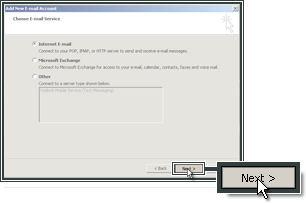
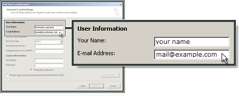
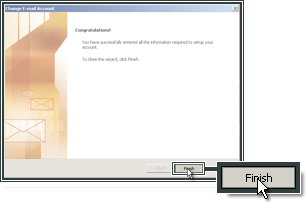

Microsoft Outlook 2007¶
Apri Outlook e seleziona Tools (Strumenti). Fai clic su Account Settings (Impostazioni account).

Fai clic su New (Nuovo).

Spunta l’opzione Manually configure server settings or additional server types (Configura manualmente le impostazioni del server o i tipi di server aggiuntivi).

Fai clic su Next (Avanti).

Seleziona Internet E-mail (E-mail Internet).

Fai clic su Next (Avanti).
Inserisci il nome e l’indirizzo e-mail.

In Logon Information (Informazioni di accesso), inserisci l’indirizzo e-mail e la password.

Configurazione del server SMTP¶
Fai clic su More Settings (Altre impostazioni).

Seleziona Outgoing Server (Server in uscita), quindi My outgoing server (SMTP) requires authentication (Il server in uscita (SMTP) richiede l’autenticazione).

Seleziona Advanced (Avanzate). Come Incoming Server (IMAP) inserisci 993 e seleziona SSL. Come Outgoing server (SMTP) (Server in uscita SMTP), inserisci 465 e seleziona SSL.

Fai clic su OK.

Fai clic su Next (Avanti).

Fai clic su Finish (Fine).
